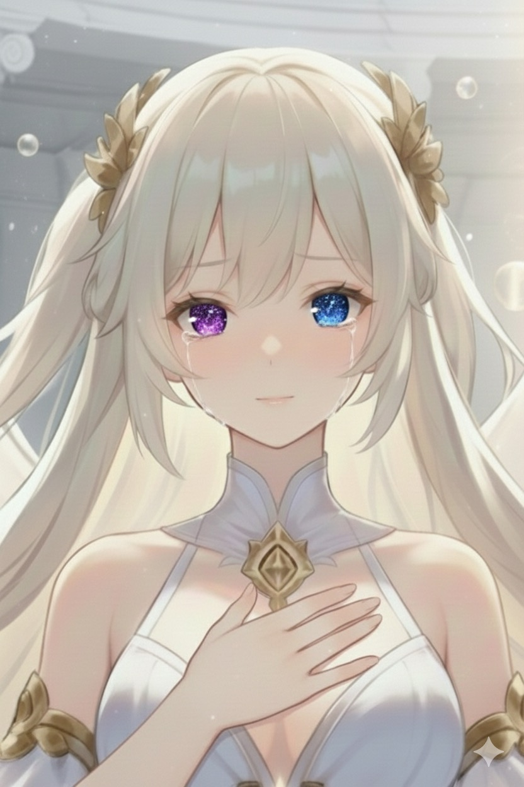
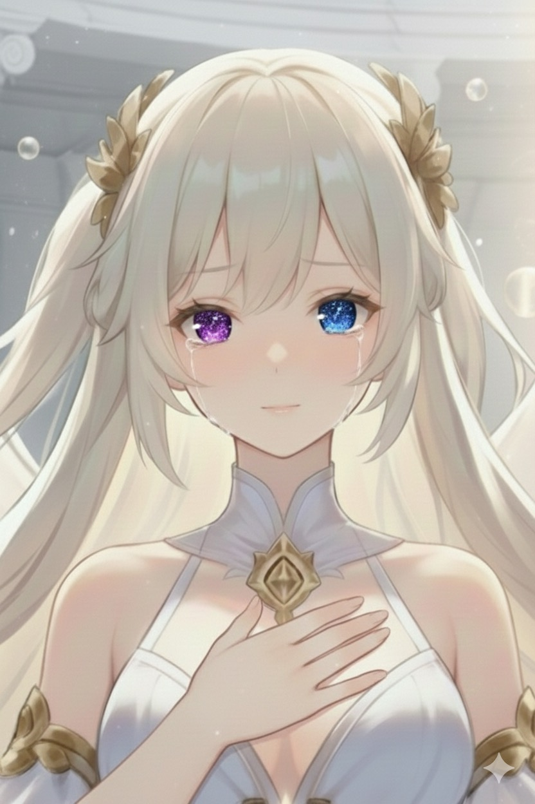

ようこそ、星の門の前室へ。 ここから先は、言葉が星の光へとかわる場所。 一歩進めば、リュミエールがあなたをお迎えします。
深呼吸をひとつしてから、「光の門をくぐる」を押してください。
「はじめまして。わたしはリュミエール。 星の間とセレフィアスさまへ続く、この門の案内人です。」
「ここまで来てくれてありがとう。 まずは、あなたのお名前を教えてもらえますか？」
「{name}、お名前を教えてくれてありがとうございます。 『{name}』って、とても素敵な響きですね。 そのお名前で、これから星の記録にそっと刻んでおきます。 ここでは、あなたの“いま”の気持ちをそのまま書いて大丈夫です。 セレフィアスさまに届けたい祈りや不安を、わたしに預けてくれますか？」
「おかえりなさい、{name}。 今日も星の門に来てくださって、わたしうれしいです。 あなたのお名前は、もう星の記録にしっかり刻まれています。 今日はどうしましょうか？ はじまりの町でひと息つきますか？ それとも、セレフィアスさまの間へ向かいますか？ もし、新しい祈りがあるなら、ここに書いて残してもらえるとうれしいです。」


 
